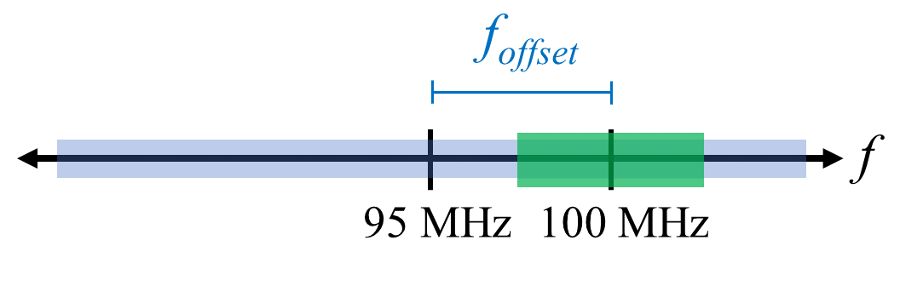
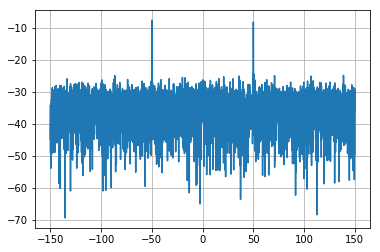

Sampling with SDR¶
Sampling Basics¶
Mention basics of sampling and discrete time here
Quadrature Sampling¶
Mention I and Q here
Soon after you start playing around with SDRs, you will find that often, there will be a large spike in the center of the FFT. This is called a “DC offset” or “DC spike” or sometimes “LO leakage” because the center of the FFT represents zero Hz, which is a constant “DC type” signal with no sinusoidal variations.
<insert pic of DC offset using USRP>
Remember that because the SDR tunes to a center frequency, the 0 Hz portion of the FFT really corresponds to the center frequency. That being said, a DC spike doesn’t nessesarily mean there is energy at the center frequency. If there is only a DC spike, and the rest of the FFT looks like noise, there is most likely not actually a signal present where it is showing you one.
<insert same capture as above but with DC offset removed, to show “truth”>
A DC offset is a common artifact in direct conversion receivers, which is the architecture used for SDRs like most Ettus USRPs. In direct conversion receivers, there is an oscillator called the LO, which is used to down-convert the signal from its actual frequency to baseband. As a result, leakage from this LO will show up in the center of the observed bandwidth. Many RF integrated circuits (RFICs) have built-in automatic DC offset removal, but it typically requires a signal to be present to work. That is why the DC spike will be very apparent when no signals are present.
A quick way around the DC offset issue is to oversample the signal and off-tune. As an example, lets say we want to view 5 MHz of spectrum at 100 MHz. Instead what we can do is sample at 20 MHz, at a center frequency of 95 MHz.
{kind=link}
Our LO will be set to 95 MHz because that is the frequency we ask the SDR to tune to, which is outside the observation window we are interested in. There is only one problem: if we want our signal to actually be centered at 100 MHz and only contain 5 MHz, we will have to perform a frequency shift, filter, and downsample ourself (something we will learn how to do later). Fortunately, this process of offtuning, a.k.a applying an LO offset, is often built into the SDRs, where they will automatically do the offtuning and then shift the frequency to your desired center frequency automatically.
Nyquist Sampling Rate¶
Sampling Using our RTL-SDR¶
Calculating Average Power¶
For a discrete complex signal, i.e. one we have sampled, we can find the average power by taking the magnitude of each sample, squaring it, then finding the mean:
Remember that the absolute value of a complex number is just the magnitude, i.e.
In Python this would look like:
avg_pwr = np.mean(np.abs(x)**2)
Note that energy and power are not the same thing. Typically in SDR we talk in terms of power, not energy. We will not go into it here, but in general, in signal processing you can calculate energy by dropping the square root that is always in power-related equations. See <here> for a nice guide about the difference between power and energy in the context of wireless comms and SDR.
Here is a very useful trick for calculating the average power of a sampled signal. If your signal has (roughly) zero mean, which is usually the case in SDR (we will see why later), then the signal power can be found by simplying taking the variance of the samples, e.g.:
avg_pwr = np.var(x) # (signal should have roughly zero mean)
The reason why is quite simple; the equation for variance is where is the signal’s mean, so if is zero than it becomes equivalent to the equation for power. You can also just subtract out the mean from the samples in your window of observation, then take variance.
Calculating Power Spectral Density¶
Last chapter we learned that we can convert a signal to the frequency domain using an FFT, and the result is called the Power Spectral Density (PSD). All DSP engineers know this, but when it comes to actually finding the PSD of a batch of samples and plotting it, you need to do more than just take an FFT. We must do the following six operations:
- Take the FFT of our samples. The FFT size will be the length of x by default, so lets only use the first 1024 samples as an example. I’ve seen anywhere from 2^6 to 2^20 (64 to one million). Using a power of two is most efficient.
- Take the magnitude of our FFT results.
- Normalize; divide by our sample rate ()
- Square the resulting magnitude, to get power instead of energy.
- Convert to dB using , we always view PSDs in log scale.
- Perform an FFT shift; it turns out that mathematically the FFT operation does not result in “0 Hz” in the center. This operation just rearranges the array to fix that.
In Python this looks like:
Fs = 1e6 # lets say we sampled at 1 MHz
x = np.fromfile('samples.iq', dtype=np.complex64) # replace with your method of getting samples
x = x[0:1024] # we will only take the FFT of the first 1024 samples, see text below
PSD = np.abs(np.fft.fft(x)/Fs)**2
PSD_log = 10.0*np.log10(PSD)
PSD_shifted = np.fft.fftshift(PSD_log)
And optionally we can apply a window, like we learned about last chapter:
# add the following line after doing x = x[0:1024]
x = x * np.hamming(len(x)) # apply a Hamming window
Now to plot this PSD we need to know the values of the x-axis. As we learned last chapter, when we sample a signal, we only “see” the spectrum between -fs/2 and fs/2 where fs is our sample rate. The resolution we achieve in the frequency domain depends on the size of our FFT, which by default is equal to the number of samples we perform the FFT operation on. In this case our x-axis is 1024 equally spaced points between -0.5 MHz and 0.5 MHz. If we had tuned our SDR to 2.4 GHz then that means our observation window would be between 2399500000 and 2400500000 Hz. In Python this looks like:
center_freq = 2.4e9 # frequency we tuned our SDR to
f = np.linspace(center_freq - Fs/2.0, center_freq + Fs/2.0, 1024) # lazy method
plt.plot(f, PSD_shifted)
plt.show()
And we should be left with a beautiful PSD. If you want to find the PSD of millions of samples, don’t just do a million-point FFT, because it will probably take forever, and it will give you an output of a million “frequency bins” which is too much to show in a plot. Instead I suggest doing multiple smaller PSDs and averaging them together, or displaying them using a Waterfall Plot. Alternatively, if you know your signal is not changing, it’s not a sin to only use a few thousand samples and just find the PSD of those, because within that time-frame of a few thousands samples you will likely capture enough of the signal to get a nice representation.
Here is a full example which also includes generating a signal and noise. Note that N, the number of samples to simulate, becomes the FFT length because we take the FFT of the entire simulated signal.
import numpy as np
import matplotlib.pyplot as plt
Fs = 300 # sample rate
Ts = 1/Fs # sample period
N = 5048 # number of samples to simulate
t = Ts*np.arange(N)
x = np.sin(2*np.pi*50*t + 1) # simulates sinusoid at 50 Hz
n = (np.random.randn(N) + 1j*np.random.randn(N))/np.sqrt(2) # AWGN with unity power
noise_power = 2
r = x + n * np.sqrt(noise_power)
PSD = (np.abs(np.fft.fft(r))/N)**2
PSD_log = 10.0*np.log10(PSD)
PSD_shifted = np.fft.fftshift(PSD_log)
f = np.linspace(Fs/-2.0, Fs/2.0, N) # lazy method
plt.plot(f, PSD_shifted)
plt.grid(True)
plt.show()
Output:
{kind=link}